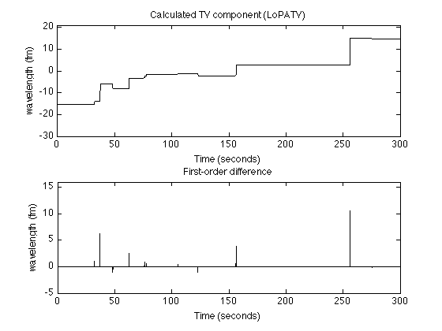

Example 3: Filtering biosensor data using the LoPATV algorithm
Filtering of biosensor data using local least-square polynomial approximation and total variation filtering (LoPATV filter)
Ivan Selesnick, Polytechnic Institute of NYU December 2011 Email: selesi@poly.edu Reference: Polynomial Smoothing of Time Series with Additive Step Discontinuities I. W. Selesnick, S. Arnold, and V. R. Dantham
Contents
Start
clear close all printme = @(filename) print('-dpdf', sprintf('figures/Example3_%s', filename));
Load data
load wgm_data.txt % load WGM sensor data y = wgm_data; N = length(y); % N : 1500 n = 1:N; t = (0:N-1)/5; % t : time axis (sampling rate is 5 samples/second) figure(1) clf plot(t, y, 'black') title('Biosensor data'); xlabel('Time (seconds)') ylabel('wavelenth (fm)') printme('data')
LoPATV filtering
Local polynomial approximation + total variation filter
lambda = 600; % lambda : TV regularization parameter L = 200; % L : block length P = 150; % P : block overlap deg = 1; % deg : degree of polynomial (N-L)/(L-P)+1 % This is the number of blocks - it should be an % integer, otherwise the data will be truncated mu0 = 500; mu = .05; Nit = 300; [x, s, cost] = lopatv(y, L, P, deg, lambda, Nit, mu0, mu); % x : TV component (approximate step signal) % s : smooth low-pass signal % cost : cost function history figure(1) plot(cost, 'black') title('Cost function history') xlabel('Iteration')
ans =
27
Display filtered data
txt = sprintf('deg %d, L = %d, P = %d, lam = %.f', deg, L, P, lambda); figure(1) clf plot(t, x+s, 'black') xlabel('Time (seconds)') ylabel('wavelenth (fm)') title('LoPATV filtered data') text(0.99, 0.01, txt, 'units', 'normalized', 'horizontalalignment', 'right', 'verticalalignment', 'bottom', 'fontsize', 12); printme('LoPATV')
Display step signal
figure(2) clf subplot(2,1,1) plot(t, x, 'black') title('Calculated TV component (LoPATV)'); ylim([-30 21]) ylabel('wavelength (fm)') xlabel('Time (seconds)') subplot(2,1,2) stem(t(1:end-1), diff(x), 'marker','none', 'color', 'black') title('First-order difference'); ylim([-5 16]) ylabel('wavelength (fm)') xlabel('Time (seconds)') printme('LoPATV_steps')
Enhanced LoPATV filtering
Lp quasi-norm minimization
p = 0.7; E = 1e-8; lambda = 900; [x, s, cost] = lopatv_Lp(y, L, P, deg, lambda, Nit, mu0, mu, p, E); figure(1) clf plot(t, s+x, 'black'); xlabel('Time (seconds)') ylabel('wavelength (fm)') title('Enhanced LoPATV filtered data') txt = sprintf('deg %d, L = %d, P = %d, lam = %.f, p = %.1f, e = %.2g', deg, L, P, lambda, p, E); h = text(0.98, 0.01, txt, 'units', 'normalized', 'horizontalalignment', 'right', 'verticalalignment', 'bottom', 'fontsize', 12); printme('enhanced_LoPATV')
figure(1) clf plot(t, y, 'color', 'red'); line(t, x+s,'linewidth',1,'color','black') legend('Data','Enhanced LoPATV filtered data', 'location','southeast') xlabel('Time (seconds)') ylabel('wavelength (fm)') title('Enhanced LoPATV filtered data') printme('enhanced_LoPATV_fig2')
Display step signal
figure(2) clf subplot(2,1,1) plot(t, x, 'black') title('x(t)'); ylim([-30 21]) ylabel('wavelength (fm)') xlabel('Time (seconds)') title('Calculated TV component (enhanced LoPATV)'); subplot(2,1,2) stem(t(1:end-1), diff(x),'marker','none', 'color', 'black') title('First-order difference'); xlabel('Time (seconds)') ylim([-5 16]) ylabel('wavelength (fm)') printme('enhanced_LoPATV_steps')